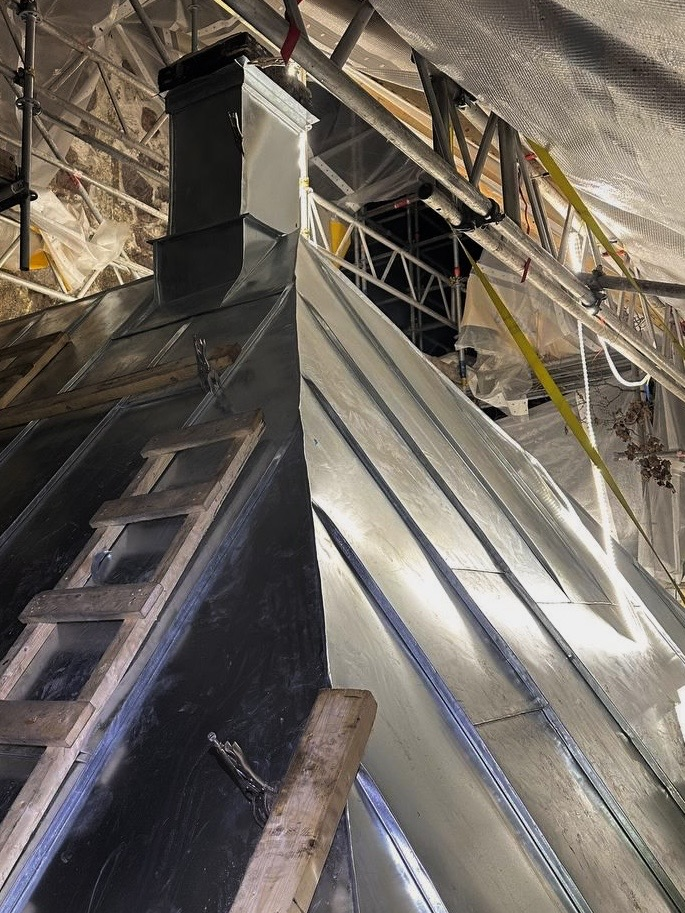
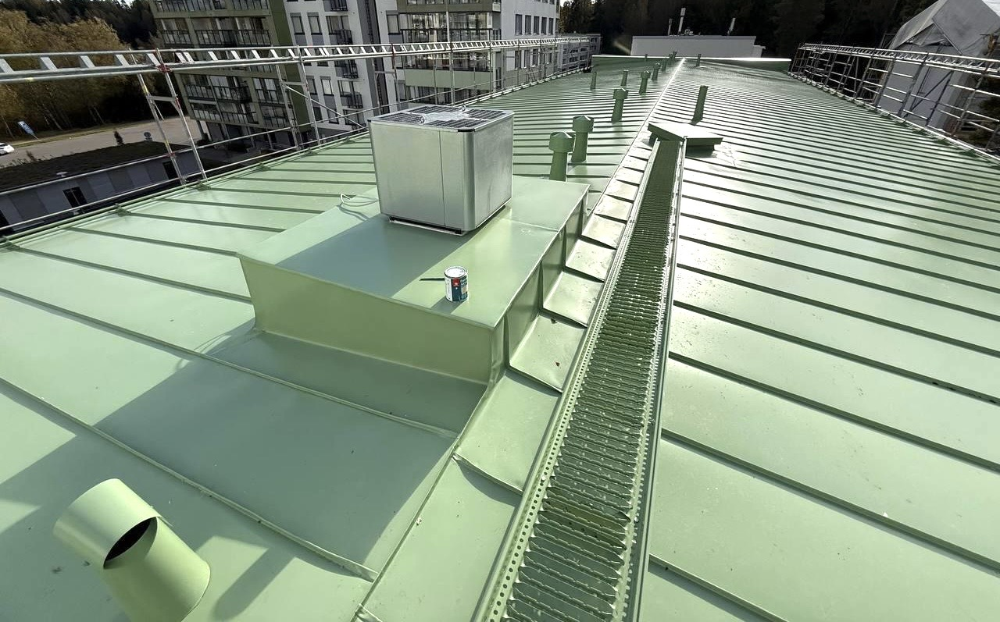

Galleria
Kuvia töistämme





Peltikattoremontit pääkaupunkiseudulla
Uusimme erityyppisiä peltikattoja, jotka voivat olla esim. yksinkertaisia pulpettikattoja tai monimuotoisia 1900-luvun alun kerrostalokattoja. Materiaalina voi olla sinkitty-, kupari- tai rst-pelti. Tarvittaessa uusimme katon sadevesijärjestelmät ja kattoturvatuotteet.
Katto ei ole vain ulospäin näkyvä pinta, vaan oleellinen osa kiinteistön kokonaiskunnolle. Katon huoltotöitä tehdessä täytyy kartoituksessa mennä pintaa syvemmälle rakenteisiin asti, jotta kaikki mahdolliset ongelmat saadaan paikannettua ja korjattua. Me teemme kattojen uudistukset perusteellisesti.
Ammattitaitoisesti asennettu peltikatto on hankinta, joka kestää pitkään. Säännöllisillä tarkastuksilla ja huoltotoimenpiteillä katon käyttöikä pitenee useita vuosia.


Olemme keränneet kokemusta korjausrakentamisen alalla jo kolmelta vuosikymmeneltä. Erityisosaamistamme ovat terastirappaukset, revityt rappaukset sekä kipsi- ja betonikoristeet.
Toteutamme korjausurakat kokonaisvaltaisesti, töiden suunnittelusta aina takuutarkastuksiin saakka. Kokonaisuus rakentuu asiakkaan toiveiden ja tarpeiden mukaisesti.
Korjausrakentamisessa vastuullinen ja luotettava toiminta ovat keskiössä. Olemme vuosien saatossa rakentaneet kustannustehokkaat toimintamallit, jotka ovat palvelumme laadun perusta.
Toimintamme on keskittynyt pääkaupunkiseudun suurehkoihin kiinteistöjen ja taloyhtiöiden julkisivukorjausurakoihin. Panostamme laadukkaaseen ja pitkäikäiseen lopputulokseen.